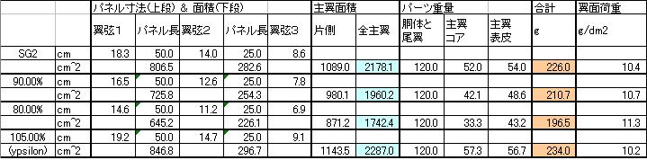

Ypsilonは、どちらかというと弱風向きの機体です。軽くて翼面積が大きいので、風が強いと飛ばしにくいです。バラストを積むこともできますが、100gとか積んで重くすると投げにくくなるし、強度的にも不安があります。バラストそのものも大きくなってしまいます。
そんなことを考えているときに、翼弦を短すると風に強くなるという情報を得ました。
この話は、2006年の夏ごろ、RCgroupsにポストされていたものです。本人ではないのですが、Olegなんかが翼面積を20dm2ぐらいにしてテストしてるって事でした。実際、XP5(Ologは関係ないけど)は写真だけから判断すると、翼弦が短くなってます。
さてさて、翼弦を短くするとどうなるのでしょう
翼長を変えないで翼弦を減らせば、重量が軽くなるはずです。
翼面積を変えると機体の重量がどうなるのか、ちょっと計算をしてみました。
|  |
さて、どのような主翼にしましょうか。20%減はちょっと怖い。翼弦が15cmを切ると、かなり細いので強度を保つのが難しそう。
重量をみてもわかるとおり、10%減でも、210gにできそうです、これなら軽量化という意味でも十分な効果です。
軽くなることはわかったけれど、本当の目的の風に対する性能はどうなのか、ちょいと計算をしてみました。
ということで、翼弦は10%減で行くことに決定です。
翼型はAG455ctシリーズでいきます。AH84のように翼厚を増やすこともちょっと考えたのですが、まずは評価が先です。
特に問題点はない、というか、かなり満足しているので、Ypsilonのものを使っていく。
でも、主翼の面積を減らすので、本来ならば、尾翼容積率を変えないように水平尾翼の面積も減らすのが正しいでしょう。そうしないとバランスが変わって、性格の違う機体になってしまうかも。専用の胴体をつくることにしたら試してみようと思ってます。
マウント部は、今の主翼の取り付け寸法がFW3の主翼にあわせてSG2オリジナルより短くなっているので、特に変更の必要はないことが判明。
ねじれ強度が低くなる
薄くて短いので、弱いはずです。対策としては、
など考えられますが、まずは、様子見で50gグラスのままで行くことにします。強度が足りないようであれば、ケブラーを検討することにします。
曲げ強度が低くなる
翼弦が短くなっても翼型を変えないので、翼厚も10%減ります。ということは、かかる力は11%ほど増えることになるので、スパーの強度を見直す必要があります。どうせ新たに切り出すことになるので、強化します。
上面スパー：テーパー8mm->4mmを 10mm->5mm
下面スパー：テーパー 6mm -> 4mm を 8mm->4mm
といったように変更します。ちょと強化しすぎ。
サーボが乗らない
フラップサーボは入りそうですけど、エルロンサーボはでっぱってしまうはず。
今後何らかの対策を考えることになるでしょう。
でも、WurtsさんのEncoreを見たら、見事にでっぱってたので、他に問題がなければ
このままにしてしまうかも。
方針は決まったので、後は、これで作るだけです。